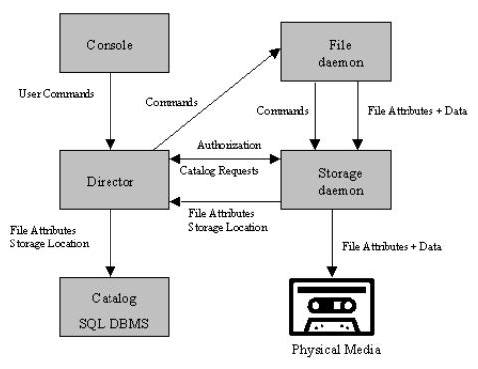

What is Bareos?¶
Bareos is a set of computer programs that permits the system administrator to manage backup, recovery, and verification of computer data across a network of computers of different kinds. Bareos can also run entirely upon a single computer and can backup to various types of media, including tape and disk.
In technical terms, it is a network Client/Server based backup program. Bareos is relatively easy to use and efficient, while offering many advanced storage management features that make it easy to find and recover lost or damaged files. Due to its modular design, Bareos is scalable from small single computer systems to systems consisting of hundreds of computers located over a large network.
History¶
Bareos is a fork of the open source project Bacula version 5.2. In 2010 the Bacula community developer Marco van Wieringen started to collect rejected or neglected community contributions in his own branch. This branch was later on the base of Bareos and since then was enriched by a lot of new features.
This documentation also bases on the original Bacula documentation, it is technically also a fork of the documenation created following the rules of the GNU Free Documentation License.
Original author of Bacula and its documentation is Kern Sibbald. We thank Kern and all contributors to Bacula and it’s documentation. We maintain a list of contributors to Bacula (until the time we’ve started the fork) and Bareos in our AUTHORS file.
Who Needs Bareos?¶
If you are currently using a program such as tar, dump, or bru to backup your computer data, and you would like a network solution, more flexibility, or catalog services, Bareos will most likely provide the additional features you want. However, if you are new to Unix systems or do not have offsetting experience with a sophisticated backup package, the Bareos project does not recommend using Bareos as it is much more difficult to setup and use than tar or dump.
If you want Bareos to behave like the above mentioned simple programs and write over any tape that you put in the drive, then you will find working with Bareos difficult. Bareos is designed to protect your data following the rules you specify, and this means reusing a tape only as the last resort. It is possible to “force” Bareos to write over any tape in the drive, but it is easier and more efficient to use a simpler program for that kind of operation.
If you would like a backup program that can write to multiple volumes (i.e. is not limited by your tape drive capacity), Bareos can most likely fill your needs.
If you are currently using a sophisticated commercial package such as Legato Networker, ARCserveIT, Arkeia, IBM Tivoli Storage Manager or PerfectBackup+, you may be interested in Bareos, which provides many of the same features and is free software available under the GNU AGPLv3 software license.
Bareos Components or Services¶
Bareos is made up of the following major components or services: Director, Console, File, Storage, and Monitor services.
Bareos Director¶
The Director is the central control program for all the other daemons. It schedules and supervises all the backup, restore, verify and archive operations. The system administrator uses the Bareos Director to schedule backups and to recover files. The Director runs as a daemon (or service) in the background.
Bareos Console¶
The Bareos Console (bconsole) is the program that allows the administrator or user to communicate with the Bareos Director. It runs in a shell window (i.e. TTY interface). Most system administrators will find this completely adequate. For more details see the section-bconsole.
Bareos File Daemon¶
The Bareos File Daemon is a program that must be installed on each (Client) machine that should be backed up. At the request of the Bareos Director, it finds the files to be backed up and sends them (their data) to the Bareos Storage Daemon.
It is specific to the operating system on which it runs and is responsible for providing the file attributes and data when requested by the Bareos Director.
The Bareos File Daemon is also responsible for the file system dependent part of restoring the file attributes and data during a recovery operation. This program runs as a daemon on the machine to be backed up.
Bareos Storage Daemon¶
The Bareos Storage Daemon is responsible, at the Bareos Director request, for accepting data from a Bareos File Daemon and storing the file attributes and data to the physical backup media or volumes. In the case of a restore request, it is responsible to find the data and send it to the Bareos File Daemon.
There can be multiple Bareos Storage Daemon in your environment, all controlled by the same Bareos Director.
The Storage services runs as a daemon on the machine that has the backup device (such as a tape drive).
Catalog¶
The Catalog services are comprised of the software programs responsible for maintaining the file indexes and volume databases for all files backed up. The Catalog services permit the system administrator or user to quickly locate and restore any desired file. The Catalog services sets Bareos apart from simple backup programs like tar and bru, because the catalog maintains a record of all Volumes used, all Jobs run, and all Files saved, permitting efficient restoration and Volume management. Bareos currently supports three different databases, MySQL, PostgreSQL, and SQLite, one of which must be chosen when building Bareos.
The three SQL databases currently supported (MySQL, PostgreSQL or SQLite) provide quite a number of features, including rapid indexing, arbitrary queries, and security. Although the Bareos project plans to support other major SQL databases, the current Bareos implementation interfaces only to MySQL, PostgreSQL and SQLite.
To perform a successful save or restore, the following four daemons must be configured and running: the Director daemon, the File daemon, the Storage daemon, and the Catalog service (MySQL, PostgreSQL or SQLite).
Bareos Version Numbers and Releases¶
Bareos :sinceVersion:`20.0.0: Semantic Versioning` follows Semantic Versioning with a few special considerations:
If a new major release does not contain backwards-incompatible changes, a subsequent release of that major version may still break backwards-compatibility with a previous major release.
Bareos Director and Bareos Storage Daemon are guaranteed to be backwards-compatible to the Bareos File Daemon of the previous two major releases.
Bareos Packages¶
Following Bareos Linux packages are available (release 17.2.4):
Package Name |
Description |
|---|---|
bareos |
Backup Archiving REcovery Open Sourced - metapackage |
bareos-bconsole |
Bareos administration console (CLI) |
bareos-client |
Bareos client Meta-All-In-One package |
bareos-common |
Common files, required by multiple Bareos packages |
bareos-database-common |
Generic abstraction libs and files to connect to a database |
bareos-database-mysql |
Libs and tools for mysql catalog |
bareos-database-postgresql |
Libs and tools for postgresql catalog |
bareos-database-sqlite3 |
Libs and tools for sqlite3 catalog |
bareos-database-tools |
Bareos CLI tools with database dependencies (bareos-dbcheck, bscan) |
bareos-devel |
Devel headers |
bareos-director |
Bareos Director daemon |
bareos-director-python-plugin |
Python plugin for Bareos Director daemon |
bareos-filedaemon |
Bareos File daemon (backup and restore client) |
bareos-filedaemon-ceph-plugin |
CEPH plugin for Bareos File daemon |
bareos-filedaemon-glusterfs-plugin |
GlusterFS plugin for Bareos File daemon |
bareos-filedaemon-ldap-python-plugin |
LDAP Python plugin for Bareos File daemon |
bareos-filedaemon-python-plugin |
Python plugin for Bareos File daemon |
bareos-regress-config |
Required files for bareos-regress |
bareos-storage |
Bareos Storage daemon |
bareos-storage-ceph |
CEPH support for the Bareos Storage daemon |
bareos-storage-droplet |
Object Storage support (through libdroplet) for the Bareos Storage daemon |
bareos-storage-fifo |
FIFO support for the Bareos Storage backend |
bareos-storage-glusterfs |
GlusterFS support for the Bareos Storage daemon |
bareos-storage-python-plugin |
Python plugin for Bareos Storage daemon |
bareos-storage-tape |
Tape support for the Bareos Storage daemon |
bareos-tools |
Bareos CLI tools (bcopy, bextract, bls, bregex, bwild) |
bareos-traymonitor |
Bareos Tray Monitor (QT) |
bareos-vadp-dumper |
VADP Dumper - vStorage APIs for Data Protection Dumper program |
bareos-vmware-plugin |
Bareos VMware plugin |
bareos-vmware-plugin-compat |
Bareos VMware plugin compatibility |
bareos-vmware-vix-disklib |
VMware vix disklib distributable libraries |
bareos-webui |
Bareos Web User Interface |
python-bareos |
Backup Archiving REcovery Open Sourced - Python module |
Not all packages (especially optional backends and plugins) are available on all platforms. For details, see section-packages.
Additionally, packages containing debug information are available. These are named differently depending on the distribution (bareos-debuginfo or bareos-dbg or …).
Not all packages are required to run Bareos.
For the Bareos Director, the package bareos-director and one of bareos-database-postgresql, bareos-database-mysql or bareos-database-sqlite3 are required. It is recommended to use bareos-database-postgresql.
For the Bareos Storage Daemon, the package bareos-storage is required. If you plan to connect tape drives to the storage director, also install the package bareos-storage-tape. This is kept separately, because it has additional dependencies for tape tools.
On a client, only the package bareos-filedaemon is required. If you run it on a workstation, the packages bareos-traymonitor gives the user information about running backups.
On a Backup Administration system you need to install at least bareos-bconsole to have an interactive console to the Bareos Director.
Quick Start¶
To get Bareos up and running quickly, the author recommends that you first scan the Terminology section below, then quickly review the next chapter entitled The Current State of Bareos, then the Installing Bareos, the Getting Started with Bareos, which will give you a quick overview of getting Bareos running. After which, you should proceed to the chapter How to Configure Bareos, and finally the chapter on Running Bareos.
Terminology¶
- Administrator
The person or persons responsible for administrating the Bareos system.
- Backup
The term Backup refers to a Bareos Job that saves files.
- Bootstrap File
The bootstrap file is an ASCII file containing a compact form of commands that allow Bareos or the stand-alone file extraction utility (bextract) to restore the contents of one or more Volumes, for example, the current state of a system just backed up. With a bootstrap file, Bareos can restore your system without a Catalog. You can create a bootstrap file from a Catalog to extract any file or files you wish.
- Catalog
The Catalog is used to store summary information about the Jobs, Clients, and Files that were backed up and on what Volume or Volumes. The information saved in the Catalog permits the administrator or user to determine what jobs were run, their status as well as the important characteristics of each file that was backed up, and most importantly, it permits you to choose what files to restore. The Catalog is an online resource, but does not contain the data for the files backed up. Most of the information stored in the catalog is also stored on the backup volumes (i.e. tapes). Of course, the tapes will also have a copy of the file data in addition to the File Attributes (see below).
The catalog feature is one part of Bareos that distinguishes it from simple backup and archive programs such as dump and tar.
- Client
In Bareos’s terminology, the word Client refers to the machine being backed up, and it is synonymous with the File services or File daemon, and quite often, it is referred to it as the FD. A Client is defined in a configuration file resource.
- Console
The program that interfaces to the Director allowing the user or system administrator to control Bareos.
- Daemon
Unix terminology for a program that is always present in the background to carry out a designated task. On Windows systems, as well as some Unix systems, daemons are called Services.
- Directive
The term directive is used to refer to a statement or a record within a Resource in a configuration file that defines one specific setting. For example, the Name directive defines the name of the Resource.
- Director
The main Bareos server daemon that schedules and directs all Bareos operations. Occasionally, the project refers to the Director as DIR.
- Differential
A backup that includes all files changed since the last Full save started. Note, other backup programs may define this differently.
- File Attributes
The File Attributes are all the information necessary about a file to identify it and all its properties such as size, creation date, modification date, permissions, etc. Normally, the attributes are handled entirely by Bareos so that the user never needs to be concerned about them. The attributes do not include the file’s data.
- File daemon
The daemon running on the client computer to be backed up. This is also referred to as the File services, and sometimes as the Client services or the FD.
- FileSet
A FileSet is a Resource contained in a configuration file that defines the files to be backed up. It consists of a list of included files or directories, a list of excluded files, and how the file is to be stored (compression, encryption, signatures). For more details, see the DirectorResourceFileSet in the Director chapter of this document.
- Incremental
A backup that includes all files changed since the last Full, Differential, or Incremental backup started. It is normally specified on the Level directive within the Job resource definition, or in a Schedule resource.
- Job
A Bareos Job is a configuration resource that defines the work that Bareos must perform to backup or restore a particular Client. It consists of the Type (backup, restore, verify, etc), the Level (full, differential, incremental, etc.), the FileSet, and Storage the files are to be backed up (Storage device, Media Pool). For more details, see the DirectorResourceJob in the Director chapter of this document.
- Monitor
The program that interfaces to all the daemons allowing the user or system administrator to monitor Bareos status.
- Resource
A resource is a part of a configuration file that defines a specific unit of information that is available to Bareos. It consists of several directives (individual configuration statements). For example, the Job resource defines all the properties of a specific Job: name, schedule, Volume pool, backup type, backup level, …
- Restore
A restore is a configuration resource that describes the operation of recovering a file from backup media. It is the inverse of a save, except that in most cases, a restore will normally have a small set of files to restore, while normally a Save backs up all the files on the system. Of course, after a disk crash, Bareos can be called upon to do a full Restore of all files that were on the system.
- Schedule
A Schedule is a configuration resource that defines when the Bareos Job will be scheduled for execution. To use the Schedule, the Job resource will refer to the name of the Schedule. For more details, see the DirectorResourceSchedule in the Director chapter of this document.
- Service
This is a program that remains permanently in memory awaiting instructions. In Unix environments, services are also known as daemons.
- Storage Coordinates
The information returned from the Storage Services that uniquely locates a file on a backup medium. It consists of two parts: one part pertains to each file saved, and the other part pertains to the whole Job. Normally, this information is saved in the Catalog so that the user doesn’t need specific knowledge of the Storage Coordinates. The Storage Coordinates include the File Attributes (see above) plus the unique location of the information on the backup Volume.
- Storage Daemon
The Storage daemon, sometimes referred to as the SD, is the code that writes the attributes and data to a storage Volume (usually a tape or disk).
- Session
Normally refers to the internal conversation between the File daemon and the Storage daemon. The File daemon opens a session with the Storage daemon to save a FileSet or to restore it. A session has a one-to-one correspondence to a Bareos Job (see above).
- Verify
A verify is a job that compares the current file attributes to the attributes that have previously been stored in the Bareos Catalog. This feature can be used for detecting changes to critical system files similar to what a file integrity checker like Tripwire does. One of the major advantages of using Bareos to do this is that on the machine you want protected such as a server, you can run just the File daemon, and the Director, Storage daemon, and Catalog reside on a different machine. As a consequence, if your server is ever compromised, it is unlikely that your verification database will be tampered with.
Verify can also be used to check that the most recent Job data written to a Volume agrees with what is stored in the Catalog (i.e. it compares the file attributes), *or it can check the Volume contents against the original files on disk.
- Retention Period
There are various kinds of retention periods that Bareos recognizes. The most important are the File Retention Period, Job Retention Period, and the Volume Retention Period. Each of these retention periods applies to the time that specific records will be kept in the Catalog database. This should not be confused with the time that the data saved to a Volume is valid.
The File Retention Period determines the time that File records are kept in the catalog database. This period is important for two reasons: the first is that as long as File records remain in the database, you can “browse” the database with a console program and restore any individual file. Once the File records are removed or pruned from the database, the individual files of a backup job can no longer be “browsed”. The second reason for carefully choosing the File Retention Period is because the volume of the database File records use the most storage space in the database. As a consequence, you must ensure that regular “pruning” of the database file records is done to keep your database from growing too large. (See the Console prune command for more details on this subject).
The Job Retention Period is the length of time that Job records will be kept in the database. Note, all the File records are tied to the Job that saved those files. The File records can be purged leaving the Job records. In this case, information will be available about the jobs that ran, but not the details of the files that were backed up. Normally, when a Job record is purged, all its File records will also be purged.
The Volume Retention Period is the minimum of time that a Volume will be kept before it is reused. Bareos will normally never overwrite a Volume that contains the only backup copy of a file. Under ideal conditions, the Catalog would retain entries for all files backed up for all current Volumes. Once a Volume is overwritten, the files that were backed up on that Volume are automatically removed from the Catalog. However, if there is a very large pool of Volumes or a Volume is never overwritten, the Catalog database may become enormous. To keep the Catalog to a manageable size, the backup information should be removed from the Catalog after the defined File Retention Period. Bareos provides the mechanisms for the catalog to be automatically pruned according to the retention periods defined.
- Scan
A Scan operation causes the contents of a Volume or a series of Volumes to be scanned. These Volumes with the information on which files they contain are restored to the Bareos Catalog. Once the information is restored to the Catalog, the files contained on those Volumes may be easily restored. This function is particularly useful if certain Volumes or Jobs have exceeded their retention period and have been pruned or purged from the Catalog. Scanning data from Volumes into the Catalog is done by using the bscan program. See the bscan section of the Bareos Utilities chapter of this manual for more details.
- Volume
A Volume is an archive unit, normally a tape or a named disk file where Bareos stores the data from one or more backup jobs. All Bareos Volumes have a software label written to the Volume by Bareos so that it identifies what Volume it is really reading. (Normally there should be no confusion with disk files, but with tapes, it is easy to mount the wrong one.)
What Bareos is Not¶
Bareos is a backup, restore and verification program and is not a complete disaster recovery system in itself, but it can be a key part of one if you plan carefully and follow the instructions included in the Disaster Recovery chapter of this manual.
Interactions Between the Bareos Services¶
The following block diagram shows the typical interactions between the Bareos Services for a backup job. Each block represents in general a separate process (normally a daemon). In general, the Director oversees the flow of information. It also maintains the Catalog.
{kind=link}
The Current State of Bareos¶
What is Implemented¶
Job Control
Network backup/restore with centralized Director.
Internal scheduler for automatic Job execution.
Scheduling of multiple Jobs at the same time.
You may run one Job at a time or multiple simultaneous Jobs (sometimes called multiplexing).
Job sequencing using priorities.
Console interface to the Director allowing complete control. Some GUIs are also available.
Security
Verification of files previously cataloged, permitting a Tripwire like capability (system break-in detection).
CRAM-MD5 password authentication between each component (daemon).
Configurable TLS (SSL) communications encryption between each component.
Configurable Data (on Volume) encryption on a Client by Client basis.
Computation of MD5 or SHA1 signatures of the file data if requested.
Restore Features
Restore of one or more files selected interactively either for the current backup or a backup prior to a specified time and date.
Listing and Restoration of files using stand-alone bls and bextract tool programs. Among other things, this permits extraction of files when Bareos and/or the catalog are not available. Note, the recommended way to restore files is using the restore command in the Console. These programs are designed for use as a last resort.
Ability to restore the catalog database rapidly by using bootstrap files (previously saved).
Ability to recreate the catalog database by scanning backup Volumes using the bscan program.
SQL Catalog
Catalog database facility for remembering Volumes, Pools, Jobs, and Files backed up.
Support for PostgreSQL, MySQL and SQLite Catalog databases.
User extensible queries to the PostgreSQL, MySQL and SQLite databases.
Advanced Volume and Pool Management
Labeled Volumes, preventing accidental overwriting (at least by Bareos).
Any number of Jobs and Clients can be backed up to a single Volume. That is, you can backup and restore Linux, Unix and Windows machines to the same Volume.
Multi-volume saves. When a Volume is full, Bareos automatically requests the next Volume and continues the backup.
Pool and Volume library management providing Volume flexibility (e.g. monthly, weekly, daily Volume sets, Volume sets segregated by Client, …).
Machine independent Volume data format. Linux, Solaris, and Windows clients can all be backed up to the same Volume if desired.
The Volume data format is upwards compatible so that old Volumes can always be read.
A flexible message handler including routing of messages from any daemon back to the Director and automatic email reporting.
Data spooling to disk during backup with subsequent write to tape from the spooled disk files. This prevents tape “shoe shine” during Incremental/Differential backups.
Advanced Support for most Storage Devices
Autochanger support using a simple shell interface that can interface to virtually any autoloader program. A script for mtx is provided.
Support for autochanger barcodes – automatic tape labeling from barcodes.
Automatic support for multiple autochanger magazines either using barcodes or by reading the tapes.
Support for multiple drive autochangers.
Raw device backup/restore. Restore must be to the same device.
All Volume blocks contain a data checksum.
Migration support – move data from one Pool to another or one Volume to another.
Multi-Operating System Support
Programmed to handle arbitrarily long filenames and messages.
Compression on a file by file basis done by the Client program if requested before network transit.
Saves and restores POSIX ACLs and Extended Attributes on most OSes if enabled.
Access control lists for Consoles that permit restricting user access to only their data.
Support for save/restore of files larger than 2GB.
Support ANSI and IBM tape labels.
Support for Unicode filenames (e.g. Chinese) on Win32 machines
Consistent backup of open files on Win32 systems using Volume Shadow Copy (VSS).
Support for path/filename lengths of up to 64K on Win32 machines (unlimited on Unix/Linux machines).
Miscellaneous
Multi-threaded implementation.
Advantages Over Other Backup Programs¶
Bareos handles multi-volume backups.
A full comprehensive SQL standard database of all files backed up. This permits online viewing of files saved on any particular Volume.
Automatic pruning of the database (removal of old records) thus simplifying database administration.
The modular but integrated design makes Bareos very scalable.
Bareos has a built-in Job scheduler.
The Volume format is documented and there are simple C programs to read/write it.
Bareos uses well defined (IANA registered) TCP/IP ports – no rpcs, no shared memory.
Bareos installation and configuration is relatively simple compared to other comparable products.
Aside from several GUI administrative interfaces, Bareos has a comprehensive shell administrative interface, which allows the administrator to use tools such as ssh to administrate any part of Bareos from anywhere.
Current Implementation Restrictions¶
Multiple Catalogs¶
It is possible to configure the Bareos Director to use multiple Catalogs. However, this is neither advised, nor supported. Multiple catalogs require more management because in general you must know what catalog contains what data, e.g. currently, all Pools are defined in each catalog.
Bareos can generally restore any backup made from one client to any other client. However, if the architecture is significantly different (i.e. 32 bit architecture to 64 bit or Win32 to Unix), some restrictions may apply (e.g. Solaris door files do not exist on other Unix/Linux machines; there are reports that Zlib compression written with 64 bit machines does not always read correctly on a 32 bit machine).
Design Limitations or Restrictions¶
Names (resource names, volume names, and such) defined in Bareos configuration files are limited to a fixed number of characters. Currently the limit is defined as 127 characters. Note, this does not apply to filenames, which may be arbitrarily long.
Command line input to some of the stand alone tools – e.g. btape, bconsole is restricted to several hundred characters maximum. Normally, this is not a restriction, except in the case of listing multiple Volume names for programs such as bscan. To avoid this command line length restriction, please use a .bsr file to specify the Volume names.
Bareos configuration files for each of the components can be any length. However, the length of an individual line is limited to 500 characters after which it is truncated. If you need lines longer than 500 characters for directives such as ACLs where they permit a list of names are character strings simply specify multiple short lines repeating the directive on each line but with different list values.
Items to Note¶
Bareos’s Differential and Incremental normal backups are based on time stamps. Consequently, if you move files into an existing directory or move a whole directory into the backup fileset after a Full backup, those files will probably not be backed up by an Incremental save because they will have old dates. This problem is corrected by using Accurate mode backups or by explicitly updating the date/time stamp on all moved files.
In non Accurate mode, files deleted after a Full save will be included in a restoration. This is typical for most similar backup programs. To avoid this, use Accurate mode backup.
Last change: Mon, 26 Jul 2021 04:03 AM Coordinated Universal Time